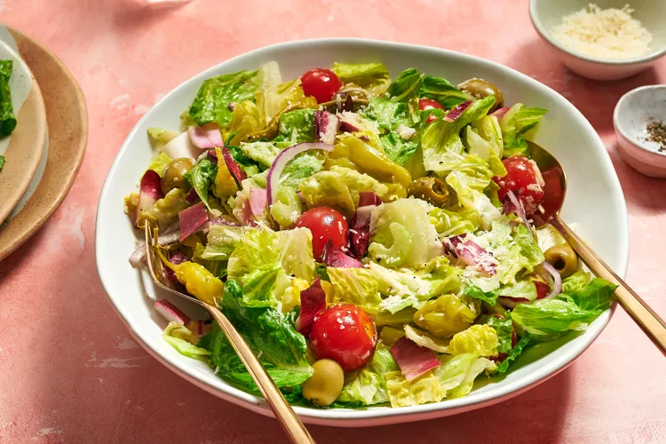

Big Italian Salad

Description
Part green salad, part antipasto salad, this recipe combines lettuce, celery, onion, peperoncini, olives, and cherry tomatoes — all tossed in a dressing made with olive oil, vinegar, and a little mayonnaise.
Ingridients
- 1 garlic clove, smashed
- Kosher salt
- 2 tablespoons mayonnaise
- 2 tablespoons red wine vinegar
- 1/2 teaspoon dried oregano
- 1/4 cup plus 2 tablespoons extra-virgin olive oil
- Freshly ground black pepper
- 1 large romaine heart, chopped
- 1 small head of radicchio, halved, cored and coarsely chopped
- 1/4 head of iceberg lettuce, coarsely chopped
- 1 tender celery rib, thinly sliced
- 1/2 small red onion, thinly sliced
- 1/2 cup cherry tomatoes
- 1/4 cup pitted green olives, preferably Sicilian
- 8 peperoncini
- 2 ounces Parmigiano-Reggiano cheese, shaved (1 cup)
Steps
- Step: Gather the ingredients.
- Step: In a large bowl, mash the garlic to a paste with a generous pinch of salt.
- Step: Whisk in the mayonnaise, vinegar, and oregano, then whisk in the olive oil. Season with pepper.
- Step: Add all of the remaining ingredients and toss well. Serve right away.
Notes
Here notes. Best in summer!
Click here to go home!